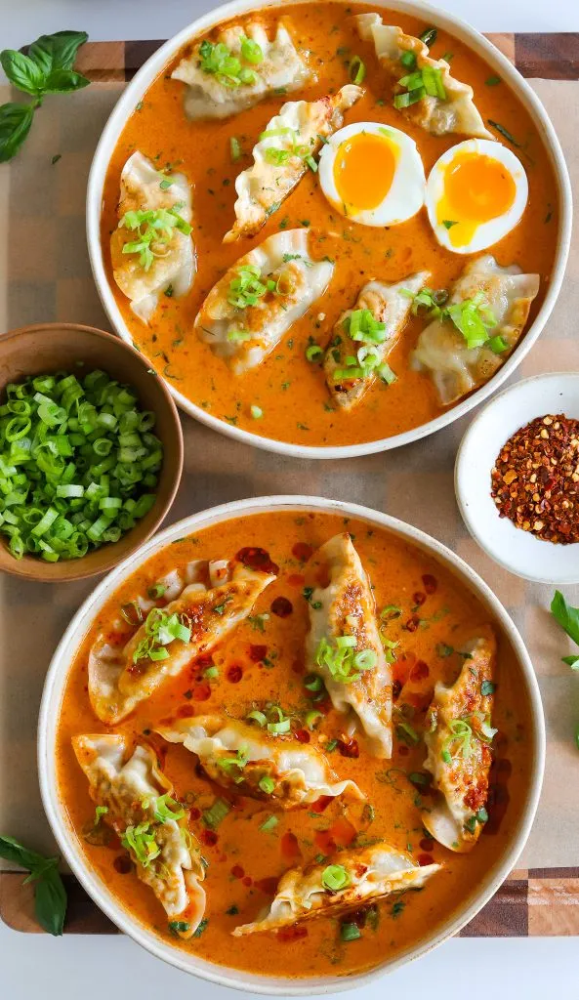

PREP TIME: 10 MINUTES
COOK TIME: 20 MINUTES
TOTAL TIME: 30 MINUTES
YIELDS: 2 TO 3
A Thai classic gets a cozy twist in this red curry dumpling soup. It’s the perfect comforting meal when you’re sick or just feeling a little under the weather. Use any dumplings or wontons you love — vegetarian, chicken, or even beef — and let them soak up all that bold, spicy broth.
JUMP TO RECIPEA classic Thai red curry gets a little cozy makeover in this red curry dumpling soup — spicy, creamy, and loaded with flavor in every bite. It’s the perfect meal when you’re feeling under the weather or just want something warm and comforting but still exciting. The broth is rich with coconut milk and red curry paste, layered with fish sauce, lime, and a hint of sweetness. Then you top it all with pan-fried dumplings for the best texture contrast — soft, crispy, and soaking up all that broth. It’s super easy to make and so hearty.
Red curry paste is the heart of this dish, and I always go for Mae Ploy — it’s rich, spicy, and packed with authentic Thai flavor. You don’t need a ton to get a deep, flavorful base, just enough to build that signature warmth and color. Cooking it down with garlic and ginger in coconut oil helps toast the spices and bring out all the aromatic goodness.
A Thai classic gets a cozy twist in this red curry dumpling soup. It’s the perfect comforting meal when you’re sick or just feeling a little under the weather. Use any dumplings or wontons you love — vegetarian, chicken, or even beef — and let them soak up all that bold, spicy broth.